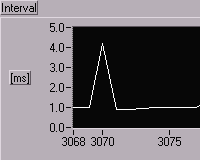
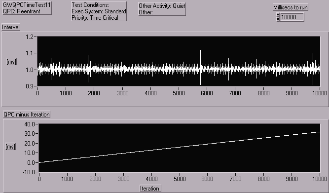

Грэхэм Вайдмэн
Изучение LabVIEW с использованием QueryPerformanceCounter
(Перевод: Климентьев К.Е, 2005. Оригинал находится на
http://www.grahamwideman.com/)
|
Статья написана 16 июня 1999 г. Внесены исправления после консультаций с National Instruments 1 июля 1999.
Содержание
Привязка ко времени в LabVIEW: функции ожидания
Виртуальный прибор, использующий QueryPerformanceCounter
Факторы, влияющие на временные характеристики
Общее введение
Тесты
Выполнение “спокойного” теста
Перемещение мыши
Открытие программного меню кнопкой “Пуск”
Минимизация окна
Максимизация окна
Запуск Excel
Выводы
Условия выполнения тестов
Комментарии к ранее написанному
Благодарности
Привязка ко времени в LabVIEW: функции ожидания
Функции LabVIEW, снабжающие привязкой ко времени порядка миллисекунд, это “Wait” и “Wait For Next ms Multiple”. Обе онованы на одном и том же внутреннем механизме; я буду ориентироваться на функцию “Wait For Next ms Multiple”, используемую в стандартной конфигурации цикла, привязанного к реальному времени (см. диаграмму ниже). Для измерения моментов событий я использовал функцию Win API под названием QueryPerformanceCounter. Эта функция на платформах x86/Пентиум обращается к высокоточному аппаратному счетчику, который работает с частотой 1.2 МГц (или с периодом 0.8 мкс). Реальная разрешающая способность, с учетом накладных расходов, будет заметно хуже, но все еще во много раз меньше, чем 1 миллисекунда.
Виртуальный прибор, использующий QueryPerformanceCounter
Для изучения поведения узла "Wait For Next ms Multiple", я написал простой виртуальный прибор, который использует высокоточную функцию QueryPerformanceCounter. Диаграмма выглядит так:
Этот прибор доступен для загрузки здесь: GWQPCTimeTest11.vi.
Обратите внимание на минимум всяческой активности внутри цикла. Графики "Interval" и "QPC minus Iteration" должны снабдить нас информацией о регулярности временных характеристик в разных условиях. Вот несколько комментариев к программе:
- Если вы скачали виртуальный прибор, вы увидите, как обращаться к измерителю производительности, если вы еще с этим аспектом не знакомы. Одна маленькая фишка касается того, что оба вызова ожидают 64-битного результата, который не поддерживается LabVIEW. Для этого мы используем два 32-битовых целых. Вообще-то, в обоих случаях нам достаточно иметь младший элемент массива. Счетчик должен рано или поздно переполниться, поэтому в серьезных приложениях мы должны использовать и старшие 32 бита, но в простых тестах мы можем их проигнорировать.
- Ранее опубликованный вариант этого прибора имел обертку для QueryPerformanceXXX под именем "Run In UI", но сейчас это называется "Reentrant". Это реально увеличило производительность в некоторых сценариях, а вероятные причины этого описаны ниже.
Факторы, влияющие на время.
“Другие активные процессы”: наиболее важный нерегулярный фактор, зависящий от количества активных процессов, запущенных на PC. Этот фактор очень труден как для управления им, так и для наблюдения за ним.
Назначение для виртуального прибора различных исполняющих систем LabVIEW. В тестах, использованных здесь, код диаграммы назначен исполняющей системе “Normal”, и пользовательский интерфейс обслуживается обычной исполняющей системой. Никакой активности пользовательского интерфейса нет во время исполнения критичных ко времени порций кода, и существует всего один прибор, так что единственная исполняющая система, которая активна, это и есть "Normal".
Установка приоритета ВП. Каждый ВП имеет определенный приоритет, который может быть установлен программистом, и который изменяется от “Below Normal” до “Time Critical”. Под Win 95/98/NT эта опция устанавливает две вещи:
- Приоритет ВП относительно любых других в рамках диспетчера исполнительной системы LV;
- Приоритет потоков операционной системы, которые работают под исполняющей системой LV, устанавливая приоритет относительно других приложений.
Реентерабельность вызовов DLL-ок. Установка DDL в состояние “non-reentrant” заставляет LV назначать их единственному потоку внутри UI Execution System для того, чтобы “синхронизировать” обращения к ним – т.е. для разрешения DDL-овскому коду не быть вызванным пока он вызывается другим кодом. Это может добавить задержки, но более важно, что заставляет диспетчер операционной системы ипсользовать преимущества вытеснять LV и запускать что-то другое. Итак, если вы знаете, что функции DLL имеют защищенные потоки (могут вызываться неоднократно и одновременно), или вы знаете, что они могут вызываться только однократно, то установите их в состояние “reentrant”.
Разделение кода на субVI. Вызов субVI может вызвать переключение на другой поток, так что код будет выполняться по-другому (не обязательно хуже) по сравнению с кодом, не разделенным на субVI.
Различия в платформах между W95/98/NT: диспетчер устроен по-разному в разных версиях Windows.
Приоритет приложения: само приложение (LabVIEW или скомпилированная программа) может иметь различные приоритеты. Тем не менее, они не складываются и не вычитаются из приоритетов переднего плана, и могут не принести никаких выгод. Подробности – см. на других страницах этого сайта.
Общее введение
В общем, подход к изучению должен заключаться в прогоне тестов, в каждом из которых влияет только один изолированный фактор, и исследовании этого влияния. Тем не менее, один из полученных уроков заключается в наличии большого количества факторов, многие из которых пользователь/разработчик не могут контролировать, особенно это касается внутренней работы операционной системы. Выполнение одних и тех же тестов на разных машинах должно приводить к разным результатам.
Следовательно, мы предлагаем к рассмотрению лишь примерные ситуации, которые вы можете и должны модифицировать для исследования ваших конкретных ситуаций.
Мы выбрали некоторое количество относительно реалистичных сценариев, и прогнали каждый из них при приоритетах Normal и Time Critical для сравнения. Каждый сценарий был выполнен несколько раз для проверки устойчивости результатов. Заметим еще раз, что ни один из этих тестов не показал высокой статистической стабильности, да и на разных машинах выполнялся несколько по разному.
Прогон “пустого” теста
Этот прогон связан с несколькими другими обстоятельствами.
Нормальный приоритет и стандартное исполнение.
Преимущественно миллисекундные интервалы: интервалы вполне близки к 1 мс, наблюдаются редкие маленькие отклонения и еще более редкие большие отклонения.
|
Достигнуты маленькие выбросы: каждый маленький положительный выброс на графике интервалов (меньший, чем миллисекундный интервал Wait) свидетельствует о незначительной задержке итерации. Эта ситуация следует за итерацией с укороченным интервалом и соответствует передаче управления планировщику. Внимательный взгляд на правый рисунок демонстрирует цикл номер 2931, при котором итерация задержана, причем он следует за укороченной итерацией. |
|
|
 |
Большие выбросы=потерянные миллисекунды: большие выбросы интервалов (>1 мс) демонстрируют итерации более длинные, чем 1 мс и результат потерянных миллисекунд. На левом графике подробно изображен цикл 3070 с задержкой 4 миллисекунды. Это некомпенсированные серии коротких циклов – вместо миллисекунд, которые пропущены. Они вызывают соответствующие шаги на графике QPC-итераций, где текущее время опережает счетчик итераций. Можно ли избежать таких неожиданных задержек? Учитывая внешние источники задержек, это вполне нормальное поведение функции "Wait for Next ms Multiple". Тем не менее, это может быть не тем, чего хотел бы программист: 1000 итераций в пустом цикле с "Wait for Next ms Multiple" займут более 1000 мс. |
Дрейф: также наблюдается медленный дрейф между QPC и счетчиком итераций, который можно видеть на проградуированном графике QPC-итераций. Это вызывается довольно медленным LV- механизмом для генерации миллисекунд. Поскольку он основан на временном кванте операционной системы, то скорей всего означает, что квант операционной системы несколько больше, чем 1 мс. (Обратите внимание, что пока LV работает, квант операционной системы установлен в “максимальное разрешение”), в отличие от обычных 10-20 миллисекунд.
Пустой – Time Critical: тот же сценарий, что и выше, только приоритет прибора (и его потока) повышается до максимума, до TimeCritical.

Выбросы более короткие, чем 1 мс: мы должны иметь в виду, что при других прогонах мы наблюдали значительно большие выбросы, что можно объяснить обращениями операционной системы к диску.
Перемещение мыши
Приоритет: Нормальный
Приоритет: Time Critical
Повышение приоритета сильно уменьшает выбросы во время “мышиного” теста.
Нажатие кнопки “Старт” в Program Menu
Нажатие кнопки старт в Program Menu и других подменю вызывает чтение диска и возрастание выбросов.
Приоритет: Нормальный.
Обратите внимание на выбросы длительностью выше 80 мс. Изредка при других прогонах этого сценария мы наблюдали выбросы длительностью до 250 миллисекунд.
Приоритет: Time Critical.
Выбросы нейтрализованы. Видимо, активность диска менее приоритетна, чем Time Critical.
Минимизация окна
Во время теста некоторые окна минимизировались щелчком по кнопке минимизации на заголовке окна (см. циклы 1300, 2300, 3800 на графике Normal и 3500,4300,4800 на Time Critical).
Приоритет: Нормальный.
Приоритет: Time Critical.
Обратите внимание, как величина выбросов (т.е. протяженность отдельных циклов) существенно уменьшается при приоритете Time Critical, но количество разорванных циклов сильно увеличивается, как изображено на нижнем графике. Детальный анализ (см. ниже) выброса в районе цикла 4800 показывает 30 успешных циклов в течение 10 мс.
Распахивание окна
Приоритет: нормальный.
Приоритет: Time Critical.
Влияние этого фактора ликвидируется приоритетом Time Critical.
Запуск Excel
Я не уверен, нужно ли это использовать в качестве теста, но National Instruments применяет именно этот сценарий для в LabVIEW 5 при демонстрации приоритетов. Как бы то ни было, здесь мы сделаем нечто похожее. Обратите внимание, что вам надо перезагрузить систему между прогонами, поскольку Excel, будучи неоднократно запущен, работает быстрей, чем в самый первый раз, так как многие его компоненты остаются в памяти.
Приоритет: Нормальный.
Приоритет: Time Critical.
Time Critical снова сильно уменьшает самые крупные выбросы, и имеет определенное влияние на общее количество “потерянного времени”.
Выводы
Понятно, что все это не слишком адекватно характеризует поведение функции “Wait For” (при очень сильном влиянии многозадачности в операционных системах). Тем не менее, я считаю, что все это имеет некоторый смысл, и вот почему:
- Используя "Wait For" и ожидая точность в несколько десятков или сотен миллисекунд, можно получить задержки такого же порядка, что существенно;
- Повышая приоритет до "Time Critical", можно совершенно решить проблему;
- Активность конкурирующих потоков, которая участвует в этих задержках, может быть вызвана активностью самого пользователя или операционной системы, так что избавиться от нее техническими методами может оказаться невозможным, зато просто не двигайте мышью и не нажимайте на кнопку “Start”!
Мнение, что LabVIEW работает плохо, - неверно, на самом деле это отражение свойств операционной системы. Тем не менее, играет роль, что программист, исследующий свои приложения (не обязательно написанные на LabVIEW), спокойно относится к возникающим задержкам. Во многих приложениях есть возможность компенсировать их, в других приложениях необходимо использовать внешние средства для выполнения критичных ко времени задач (например, оборудование LabVIEW RT).
Предсказание свойств ваших приложений должно быть существенно проще если существует адекватное описание временных характеристик среды, но у нас его нет, и это отдельная проблема, зависящая от многих факторов, многие из которых зависят от конкретной системы, на которой работает приложение. По сведениям, которые неформально сообщили мне люди из National Instruments, вот что актуально и для LabVIEW, и для других сред разработки:
…различия, которые мы измерили в различных версиях NT с использованием усреднения для исключения загрузки операционной системы, показывают, что [авторитетная характеристика] почти невозможна, и если пользователь хочет получить детерминизм системы, ему необходимо сделать что-то похожее и исследовать это самостоятельно.
Поварившись во всем этом […], можно было стать человеком, который знает, что он делает, используя LabVIEW, DOS, MacOS, Windows и другие “не-реально-временные” инструменты для построения детерминированных систем, потому что он сам сделал это, изучил это и настроил это. Потом такие люди отходили в сторону, и такие системы оказывались запущены в автономную работу. Добавление всего одного рисового зерна требует перенастройки всей системы. Windows NT сюда тоже относится. Если пользователи хотят получить статистику работы их сложных систем, они должны собрать данные, подвергнуть систему испытаниями и обратиться к нам, чтобы мы проинтерпретировали их результаты […] LabVIEW RT – это попытка изменить такое положение дел. В среде реального времени большее количество людей будут делать все правильно и менее хаотично в ситуации, когда произошли изменения.
Условия тестирования
Примеры, рассмотренные здесь, работали (и скриншоты это подтверждают) в следующей системе:
- Intel Pentium II 233 MHz, 128 Meg RAM, NT 4 SP3. Система располагалась в локальной сети с другим PC, и сеть не была отключена. Тем не менее, никакой сетевой активности не ожидалось, и ее действительно не было, что показали светодиоды концентратора и сетевых карт;
- LabVIEW 5.0 демо-версия;
- Все выполнялось в среде LabVIEW и не компилировалось в EXE;
- была включена опция "Run with multiple threads" (“Использовать многопоточность”) – эта опция включена по умолчанию;
- приложение работало с Нормальным приоритетом процесса.
Комментарии, добавленные после опубликования
Я ожидал, что документация LabVIEW, или другие источники, скажут что-нибудь авторитетное о временных аспектах работы виртуальных приборов, но такого практически не наблюдалось. Всего две более-менее подходящих цитаты можно найти в документации LabVIEW 5:
Function and VI Reference: Wait Until Next ms Multiple: Ожидает, пока количество миллисекунд таймера не сравняется с ожидаемым количеством миллисекунд. Используйте эту функцию для синхронизации работы. Вы можете вызывать ее в цикле для управления временем выполнения цикла. Но это сильно зависит от оборудования, и на медленных системах, например, на i80386, вы получите худшую длительность цикла.
Контекстная помощь "Timing": функции работы со временем оперируют с миллисекундами, в то же время ваша операционная система может и не обеспечивать такой точности. (Windows 95/NT) . Таймер имеет разрешающую способность 1 мс. Но это сильно зависит от оборудования, и на медленных системах, например, на i80386, вы получите худшую разрешающую способность.
Только всплывающие подсказки LabVIEW для функций ожидания говорит вам: “разрешающая способность таймера зависит от системы, и может быть хуже 1 мс. Подробней - см. Function Reference Manual”. Но этот документ не содержит ожидаемых подробностей.
Имеющиеся прочие, довольно всесторонние материалы (и книги сторонних авторов), которые призывают очень осторожно обращаться с длительностью первого цикла (она не такова, как вы о ней думаете!), с использованием 386 машин, тем не менее обращают очень мало внимания на временные аспекты, вносимые планировщиком операционных систем, что привело меня к мысли о необходимости практически заново описывать подробности работы LabVIEW. Как показали данные исследования, многозадачность влияет на LabVIEW так же, как и на другие приложения. В NI меня поблагодарили за эту статью, поздравили с найденной ошибкой в документации и пообещали ее в какой-то мере исправить.
Благодарности
Эта статья во многом основана на данных, поправках и результатах, полученных от Greg McKaskle и Jim Balent из LabVIEW, от других бывших сотрудников этой компании, от корреспондентов, обитающих в “info-labview list server”, и особенно от Mark Hanning-Lee, который прислал мне виртуальный прибор с некоторыми исправлениями.
|